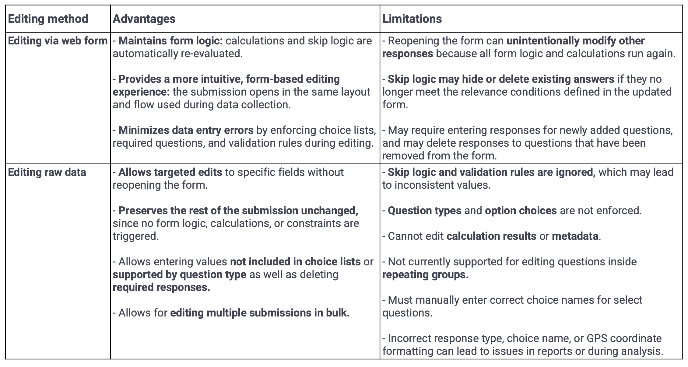
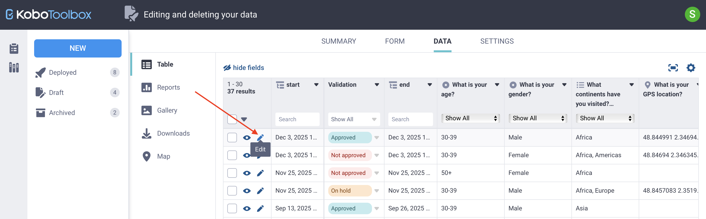
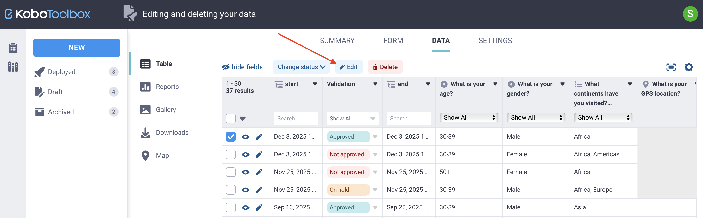
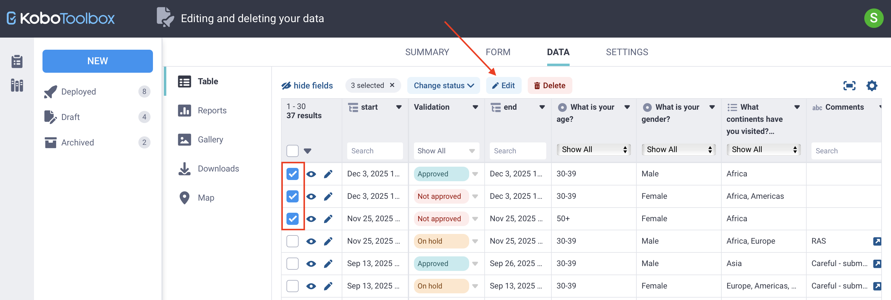
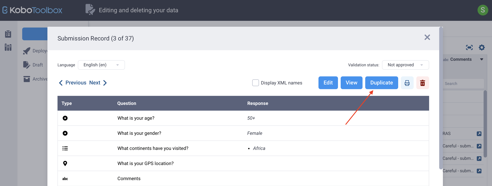
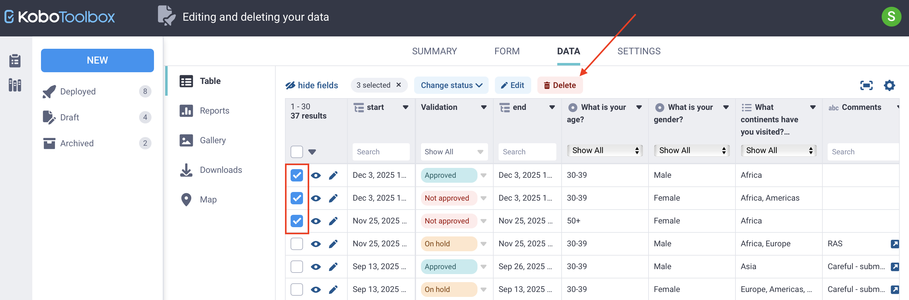

Busca en nuestra documentación, explora nuestros recursos y visita nuestro Foro de la Comunidad para obtener información más detallada
Última actualización: 6 de mayo de 2026
Modificar y eliminar datos ayuda a mantener la calidad de los datos después de recolectar los envíos. Es posible que necesites corregir respuestas individuales, actualizar múltiples registros a la vez, duplicar un envío o eliminar registros que ya no son necesarios. KoboToolbox ofrece varias formas de gestionar estas tareas, entre ellas editar envíos a través de un formulario web, editar datos sin procesar directamente y aplicar actualizaciones masivas. Este artículo explica cada método y cuándo utilizarlo.
Nota: Los envíos recolectados con la aplicación Android KoboCollect no pueden editarse ni eliminarse en KoboCollect después de ser enviados. Todos los cambios posteriores al envío deben realizarse en KoboToolbox.
Los propietarios del proyecto pueden controlar el acceso a los datos asignando permisos independientes para ver, editar, validar y eliminar envíos. Por ejemplo, pueden permitir que algunos miembros del equipo editen datos mientras restringen los permisos de eliminación.
Para obtener más información sobre los permisos a nivel de usuario para editar y eliminar datos, consulta Compartir proyectos con permisos a nivel de usuario.
KoboToolbox ofrece dos métodos de edición, cada uno diseñado para diferentes casos de uso. Entender en qué se diferencian te ayuda a elegir el método más seguro y adecuado para actualizar los datos.
Los dos métodos para editar envíos en KoboToolbox son:
Editar envíos a través de un formulario web: Abre el envío como un formulario web para que puedas corregir las respuestas y reenviar el formulario. Este método es recomendable cuando es necesario aplicar la lógica del formulario.
Editar datos sin procesar directamente en KoboToolbox: Abre un editor de datos que te permite modificar respuestas específicas directamente. Este método es recomendable cuando necesitas un control preciso sobre las ediciones y no necesitas que se aplique la lógica del formulario.
Cada método tiene sus ventajas y limitaciones:

Nota: Al editar datos con cualquiera de los dos métodos, el campo de metadatos _uuid se actualiza cada vez que se guarda un cambio. Al editar a través de un formulario web, el campo end también se actualiza. Todos los demás campos de metadatos permanecen sin cambios, incluidos _id, rootUuid, start, today, _submission_time y _submitted_by.
Este método abre un envío como un formulario web para que puedas corregir las respuestas.
Para editar un envío a través de un formulario web:
En la fila del envío, junto a la casilla de verificación, haz clic en Editar. El envío se abre como un formulario web.
Realiza los cambios necesarios.
Haz clic en Enviar.
Todas las actualizaciones, incluidos los campos recalculados y los metadatos actualizados, aparecen en la tabla de datos.

Nota: Dado que este método vuelve a abrir y reenviar el formulario, puede modificar involuntariamente otros campos, en particular los afectados por la lógica de omisión o los cálculos. También utiliza la versión más reciente del formulario. Como resultado, es posible que necesites proporcionar respuestas para preguntas recién añadidas, y las respuestas a preguntas que han sido eliminadas del formulario se borrarán.
Este método te permite omitir la lógica del formulario y editar las respuestas almacenadas directamente sin volver a abrir el formulario. Es útil cuando los cambios no se pueden realizar a través de un formulario web, por ejemplo, si la lógica del formulario impide el reenvío o si preguntas recién marcadas como obligatorias requieren respuestas.
Para editar datos sin procesar en KoboToolbox:
Selecciona el envío usando la casilla de verificación.
Haz clic en Editar encima de la tabla de datos.
En la ventana de edición, haz clic en Editar junto al campo que deseas cambiar e ingresa el nuevo valor.
Para preguntas de tipo selección múltiple, ingresa uno o más valores XML válidos, separados por espacios.
Haz clic en Guardar y luego en Confirmar y cerrar.

Nota: Se recomienda registrar las ediciones de datos en un registro externo o en un campo de comentarios dedicado. Las ediciones no se pueden deshacer, pero pueden modificarse nuevamente más adelante.
Cuando se trabaja con conjuntos de datos grandes, es posible que necesites actualizar múltiples registros al mismo tiempo. La edición masiva ayuda a corregir errores sistemáticos, completar información faltante y estandarizar respuestas en muchos envíos. Este método reduce el trabajo repetitivo y acelera el proceso de limpieza de datos.
Puedes editar múltiples envíos de forma masiva usando el método de edición de datos sin procesar en KoboToolbox:
Selecciona los envíos que deseas editar usando las casillas de verificación.
Haz clic en Editar encima de la tabla. Se abre una ventana que muestra las respuestas de todos los envíos seleccionados.
Haz clic en Editar junto al campo que deseas actualizar.
Ingresa un nuevo valor, o haz clic en Seleccionar para aplicar un valor existente a todos los envíos seleccionados.
Haz clic en Guardar y luego en Confirmar y cerrar.

Nota: Puedes seleccionar todos los envíos de la página actual haciendo clic en la casilla de verificación del encabezado de la tabla. Para seleccionar todos los envíos del proyecto en todas las páginas, haz clic en la flecha junto a la casilla de verificación y elige Seleccionar todos los resultados.
Puedes duplicar un envío siguiendo estos pasos:
En la fila del envío, junto a la casilla de verificación, haz clic en Ver.
En la esquina superior derecha de la ventana del envío, haz clic en Duplicar.
El envío duplicado se abre en una nueva ventana, donde puedes Editar o Descartar según sea necesario.

Nota: Al duplicar un envío, los datos de respuesta se copian, pero el estado de validación se restablece. Los campos de metadatos se actualizan para reflejar el nuevo envío, incluidos start, end, today, _id, _uuid, _submission_time y _submitted_by.
Eliminar datos borra registros de forma permanente de tu proyecto y debe hacerse con cuidado. Es posible que necesites eliminar envíos para quitar duplicados, limpiar datos de prueba o resolver problemas de calidad de datos. KoboToolbox te permite eliminar envíos individuales o múltiples envíos a la vez.
Selecciona el o los envíos que deseas eliminar.
Haz clic en Eliminar encima de la tabla de datos.
Confirma la eliminación.
Los envíos eliminados se borran de forma permanente y no pueden recuperarse.

Nota: Puedes usar los registros del historial de la actividad del proyecto para hacer seguimiento a las ediciones y eliminaciones realizadas por los usuarios del proyecto.
En algunos casos, es posible que desees eliminar las respuestas de un solo campo sin eliminar el envío completo. Esto puede ser útil para la anonimización de datos, por ejemplo, cuando se elimina información de identificación personal después de haberla almacenado de forma segura.
No existe una opción dedicada para eliminar el valor de un solo campo. En su lugar, puedes borrar o reemplazar el valor siguiendo este método:
Selecciona el o los envíos que deseas actualizar.
Haz clic en Editar encima de la tabla de datos.
Haz clic en Editar junto al campo que deseas borrar, luego ingresa un espacio o un valor de reemplazo como «deleted» o «N/A».
Haz clic en Guardar y luego en Confirmar y cerrar.
Nota: Puedes eliminar archivos multimedia adjuntos de tus datos, ya sea de forma individual o masiva. Para obtener más información, consulta Gestionar respuestas con archivos multimedia.
latitud longitud altitud precisión. Por ejemplo, las coordenadas de París serían 48.8566 2.3522 0 0. _uuid con el campo rootUuid en la tabla de datos o en los datos exportados. El valor de rootUuid permanece igual para el envío original, mientras que el valor de _uuid cambia cada vez que se edita el envío. Si los valores son diferentes, es probable que el envío haya sido editado.
¿Encontraste lo que buscabas? ¿Te ha parecido clara la traducción? ¿Faltaba algo?
¡Comparte tus comentarios para ayudarnos a mejorar este artículo!
KoboToolbox es mantenido por Kobo Inc.